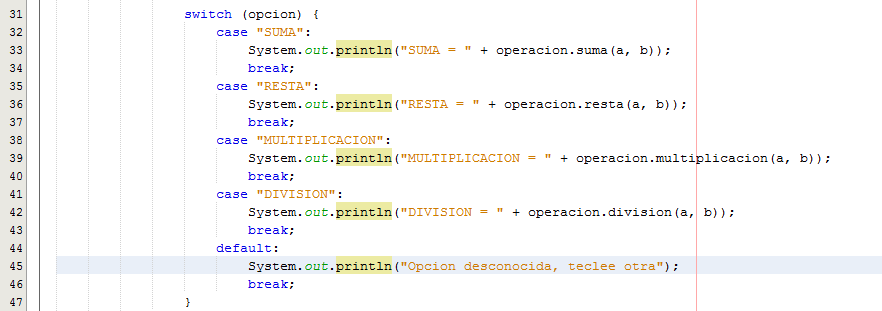
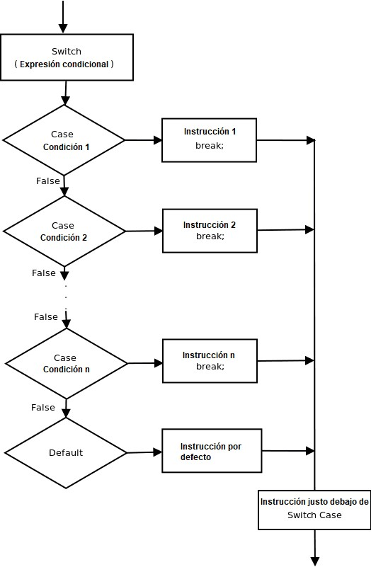

La instrucción switch es una instrucción de múltiples vías.
Proporciona una forma sencilla de enviar la ejecución a diferentes partes del código en función del valor de la expresión.
Básicamente, la expresión puede ser tipos de datos primitivos byte, short, char e int.
A partir de JDK7, también funciona con tipos enumerados (Enum en java), la clase String y las clases Wrapper.
Sintaxis de Switch-case:
// declaración de switch
switch(expresión)
{
// declaración case
// los valores deben ser del mismo tipo de la expresión
case valor1:
// Declaraciones
break; // break es opcional
case valor2 :
// Declaraciones
break; // break es opcional
// Podemos tener cualquier número de declaraciones de casos o case
// debajo se encuentra la declaración predeterminada, que se usa cuando
ninguno de los casos es verdadero.
// No se necesita descanso en el case default
default :
// Declaraciones
}
Diagrama de Flujo de Switch-case:

Diagrama de Flujo de Switch-case Java
Algunas reglas importantes para declaraciones switch:
Los valores duplicados de los case no están permitidos.
El valor para un case debe ser del mismo tipo de datos que la variable en
el switch.
El valor para un case debe ser una constante o un literal. Las variables
no están permitidas.
La declaración break se usa dentro del switch para finalizar una secuencia
de instrucción.
La declaración break es opcional. Si se omite, la ejecución continuará en
el siguiente case.
La instrucción default es opcional, y debe aparecer al final del switch.
2. Ejemplos de Switch case
Considere el siguiente programa java, declara un llamado day cuyo valor
representa un día (1-7). El código muestra el nombre del día, basado en el
valor del día, usando la declaración switch.
// programa Java para demostrar switch case
// con tipo de datos primitivos (int)
public class Test
{
public static void main(String[] args)
{
int day = 5;
String dayString;
// instrucción switch con tipo de datos int
switch (day)
{
case 1: dayString = "Lunes";
break;
case 2: dayString = "Martes";
break;
case 3: dayString = "Miercoles";
break;
case 4: dayString = "Jueves";
break;
case 5: dayString = "Viernes";
break;
case 6: dayString = "Sabado";
break;
case 7: dayString = "Domingo";
break;
default: dayString = "Dia inválido";
break;
}
System.out.println(dayString);
}
}
3. Declaraciones anidadas de Switch Case
Podemos usar un switch como parte de la secuencia de la declaración de un
switch externo. Esto se llama un switch anidado. Como una instrucción de
switch define su propio bloque, no surgen conflictos entre las constantes
de case en el switch interno y las del switch externo. Por ejemplo:
// programa de Java para demostrar
// declaracines switch case anidadas
public class Test
{
public static void main(String[] args)
{
String Branch = "CSE";
int year = 2;
switch(year)
{
case 1 :
System.out.println("Cursos electivos: Ingles, Calculo");
break;
case 2:
switch (Branch) // switch anidado
{
case "CSE":
case "CCE":
System.out.println("Cursos electivos : Machine Learning, Big Data");
break;
case "ECE":
System.out.println("Cursos electivos : Programacion");
break;
default:
System.out.println("Cursos electivos : Ingenieria de Software");
}
}
}
}
Salida:
Cursos electivos : Machine Learning, Big Data
4. String en Switch Case
Desde JDK 7, podemos usar una cadena literal/constante para controlar una
declaración switch, lo cual no es posible en C/C++. Usar un modificador
basado en cadena/string es una mejora con respecto al uso de la secuencia
equivalente if/else.
Puntos importantes:
Operación costosa: el “switching” de strings puede ser más costosa en
términos de ejecución que el switching de tipos de datos primitivos. Por
lo tanto, es mejor activar el switch con strings solo en casos de que los
datos de control ya estén en forma de cadena.
String no debe ser NULL: asegúrese de que la expresión en cualquier
instrucción switch no sea nula mientras se trabaja con cadenas para evitar
que una NullPointerException sea lanzada en tiempo de ejecución.
Case Sensitive – mayúsculas/minúsculas: la instrucción switch compara el
objeto String en su expresión con las expresiones asociadas con cada
etiqueta de case como si estuviera usando el método String.equals; en
consecuencia, la comparación de objetos String en sentencias switch es
sensible a mayúsculas y minúsculas.
Mejor que if-else: el compilador Java genera bytecode generalmente más
eficiente a partir de sentencias switch que usan objetos String que de
sentencias if-else anidadas.
Ejemplo:
// Programa Java para demostrar el uso de un
// string para controlar una declaracion switch
public class Test
{
public static void main(String[] args)
{
String str = "dos";
switch(str)
{
case "uno":
System.out.println("uno");
break;
case "dos":
System.out.println("dos");
break;
case "tres":
System.out.println("tres");
break;
default:
System.out.println("no coincide");
}
}
}
Salida:
dos